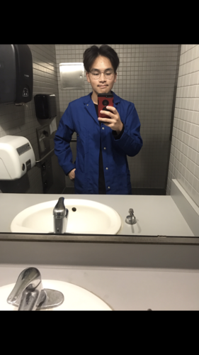
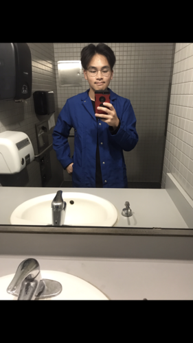

Portfolio



I am a second year and plan to head into the health field.
My career goal is to be in a setting that revolves around my preference of being in a setting that involves working with people and being in a setting where I’m constantly learning new things. I feel that the health field covers all of these preferences of mine. With this program, I want to learn about the different procedures and practices that workers in the health field follow in a hospital setting.
As a person, I have always been interested in working with people. Whether it be giving advice or helping people out, I enjoy interacting with people. Being able to be in an environment such as the Health Scholar program will put me in many different situations where I can do just that, interacting with people. I’ve limited my career choices by the subjects in school I am interested in. My interests in Science and Math courses make me more of a practical person rather than a creative one, and I feel that the health field is more practical due to the procedures that doctors and health care workers follow. Also, I am always eager to learn something new. The health field is always changing; every day, a new drug or procedure is developed. This will keep me busy, learning and adapting to the evolving health field each and every day.
• Run experiments
• Worked on a team
• Learn about science
• Pre-health organization
• Work with philanthropy
• Attend health fairs and conferences